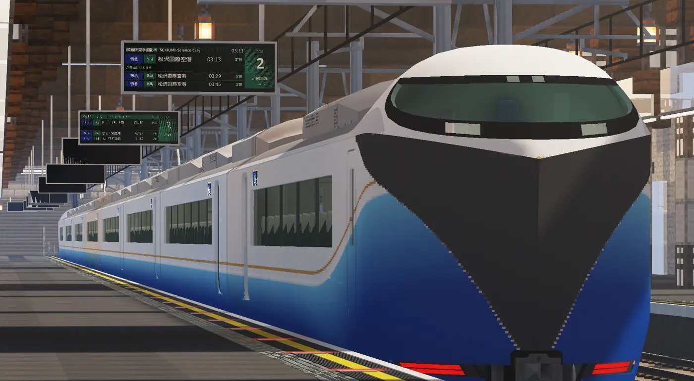
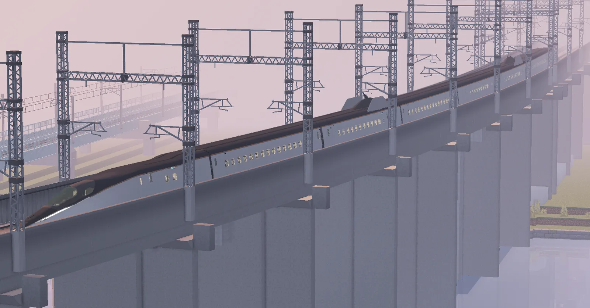

Timetable, Fares & Booking
時刻表・票價查詢・訂票
Facilities & Equipment
設備與設施介紹

特特急あおさぎLimited Express AOSAGI
松澤國際空港方面
新8000形1000番台・主動擺錘振子式傾斜
USB 充電座・閱讀燈・大型行李架
 特
特特急こばな・スーパーこばなLimited Express KOBANA / Super KOBANA
勝守、天鳥崎、磯島方面
新8000形0番台・全車指定席（另有立席）
USB 充電座・閱讀燈・大型行李架
 快
快花川本線特別快速Hanakawa Main Line Special Rapid
名島港、十万浦、松澤國際空港方面
新2100形・含松歲線直通班次
部分指定席服務・充電座
 環
環環狀快速白藏山線直通Loop Semi-Fast (Shirakura Line)
白藏山、紫市、勝守方面
10000形・新1150形

高万瀨高速鉄道Manse High-Speed Rail
新岩澤、勝守、上羽、汐崎方面
HR-新01系・2026.11.16 開通
運行情報Service Status
| 路線 | 運行狀況 |
|---|
最新消息News
Sights
沿線景點


Route Map
路線圖
點選車站，可查看接下來的發車與時刻表；想看列車位置請到「即時列車動態」。